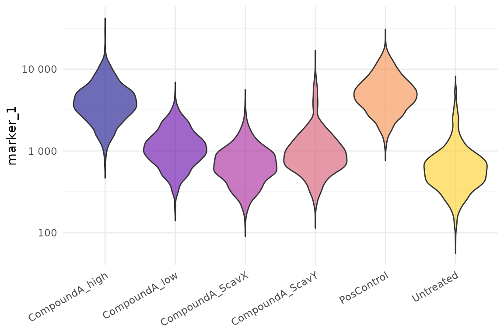
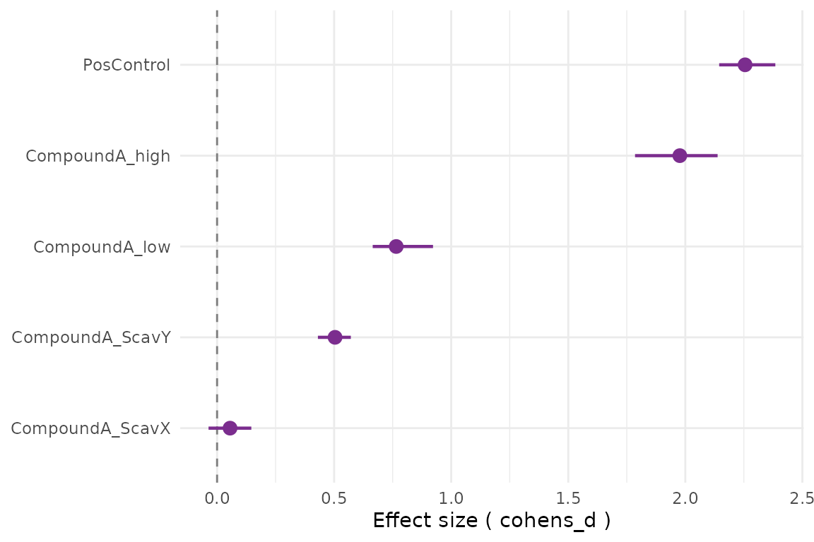
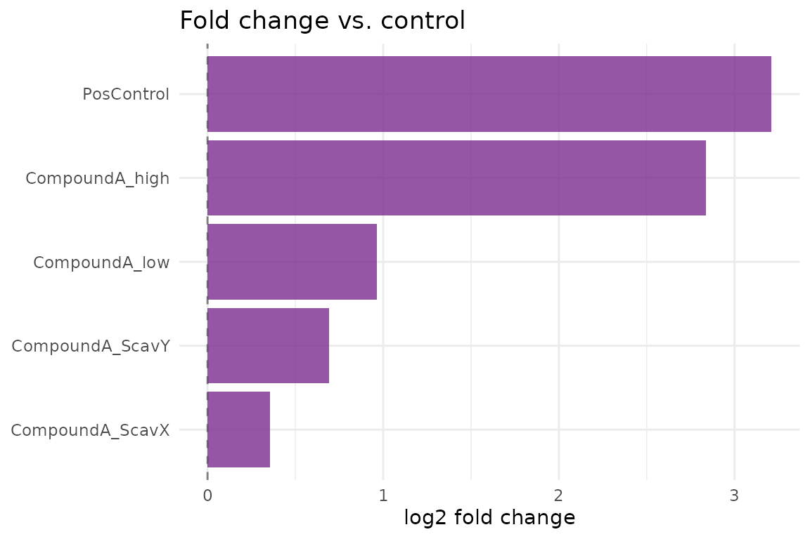
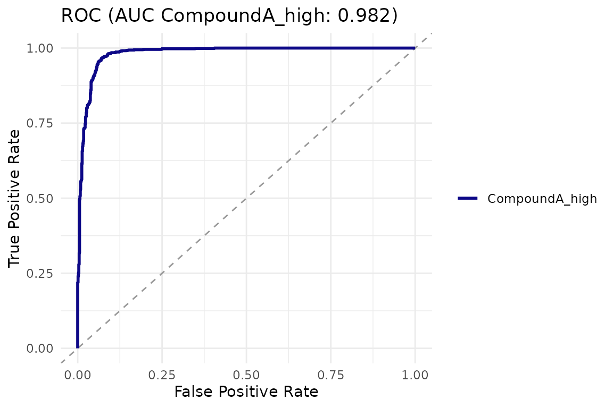

cellreportR takes you from segmented single-cell microscopy data to a structured, publication-ready diagnostic report. This vignette walks through a full five-minute workflow using bundled synthetic data.
1. Load example data
The function cr_example_experiment() generates a
realistic 96-well synthetic experiment with six treatment groups, four
channels, and plate-edge / debris / contamination artefacts to exercise
the QC pipeline.
exp <- cr_example_experiment(seed = 42, n_cells_per_well = 60)
exp
#> ── cr_experiment ───────────────────────────────────────────────────────────────
#> • Cells: 5757 across 96 wells
#> • Channels: "DAPI", "marker_1", "marker_2", and "marker_3"
#> • Design: 6 treatment groups
#> • QC steps applied: 0
#> ℹ Metadata fields: project and sop2. Inspect the design
head(exp$design)
#> # A tibble: 6 × 7
#> well treatment dose dose_unit group replicate timepoint
#> <chr> <chr> <dbl> <chr> <chr> <int> <dbl>
#> 1 A01 Untreated 0 uM control 1 24
#> 2 B01 Untreated 0 uM control 1 24
#> 3 C01 Untreated 0 uM control 1 24
#> 4 D01 Untreated 0 uM control 1 24
#> 5 E01 Untreated 0 uM control 2 24
#> 6 F01 Untreated 0 uM control 2 24
summary(exp)
#> # A tibble: 6 × 3
#> treatment n_wells n_cells
#> <chr> <int> <int>
#> 1 CompoundA_ScavX 16 946
#> 2 CompoundA_ScavY 16 970
#> 3 CompoundA_high 16 962
#> 4 CompoundA_low 16 984
#> 5 PosControl 16 924
#> 6 Untreated 16 9713. Apply quality control
exp_qc <- exp |>
cr_qc_filter(min_area = 50, max_area = 5000, min_circularity = 0.2) |>
cr_qc_doublets(k = 2.5)
cr_qc_summary(exp_qc)
#> # A tibble: 2 × 7
#> step parameters cells_before cells_after cells_removed percent_removed
#> <chr> <chr> <int> <int> <int> <dbl>
#> 1 cr_qc_filter min_area=… 5757 5442 315 5.47
#> 2 cr_qc_doubl… method=ar… 5442 5440 2 0.0368
#> # ℹ 1 more variable: timestamp <dttm>4. Compute fold changes and run tests
res <- cr_test_all(exp_qc,
channel = "marker_1",
control_group = "Untreated",
level = "replicate")
attr(res, "summary")
#> # A tibble: 5 × 6
#> treatment log2_fc p_value cohens_d p_adj interpretation
#> <chr> <dbl> <dbl> <dbl> <dbl> <chr>
#> 1 PosControl 3.21 0.00000154 2.26 0.00000386 strong
#> 2 CompoundA_low 0.963 0.0000368 0.765 0.0000613 moderate
#> 3 CompoundA_high 2.84 0.00000154 1.98 0.00000386 strong
#> 4 CompoundA_ScavX 0.354 0.0302 0.0554 0.0302 weak
#> 5 CompoundA_ScavY 0.690 0.0000509 0.504 0.0000636 moderate5. Visualize
cr_plot_intensity(exp_qc, "marker_1")
cr_plot_effect_sizes(res)
cr_plot_foldchange(res)
6. Logistic regression and ROC
logit <- cr_logistic(exp_qc,
channel = "marker_1",
treatment = "CompoundA_high",
control = "Untreated")
cr_plot_roc(logit)
7. Next steps
- See
vignette("statistical-analysis")for details on the choice between cell-level and replicate-level tests. - See
vignette("dose-response")for IC50/EC50 fitting. - Run
cr_run_app()to explore your data interactively.
Use of LLM tools
Portions of this package were prepared with assistance from large
language model tooling for narrowly defined, non-authorial tasks:
copyediting, prose smoothing, Markdown/LaTeX formatting, scaffolding of
boilerplate files (CI configs, build scripts), code refactoring. The
tools used were Chat AI,
the LLM service of KISSKI (GWDG), and a self-hosted Mistral
Small (24B, Apache-2.0) run locally via Ollama and the ollamar R
package — local inference only, with no data sent to third parties for
the self-hosted model.
All scientific claims, methodological choices, analyses, interpretations, and conclusions are the author’s own. No LLM-generated text was incorporated without review and revision, and every reference was verified against its DOI, arXiv ID, or ISBN.